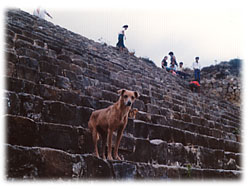

|
「うー、あー、こりゃこりゃ。だめじゃだめじゃ、難しい顔しおって。間抜けは中途半端に難しいことを考えてはいかんぞ、もしかして」
小屋の暗がりの中に、突然懐かしい声が響いた。眠そうではあるものの、このかん高くひび割れた声を間違うはずもない。冷たく硬直していた心の底辺がお湯に浸されたように温み始めた。丸一日遠ざかっていただけなのに、この声の主と再び会えたことをこれだけありがたく思うとは自分でも意外だった。
「ボラボラ、どこに？」
「さすがのワシもくたびれ果てたわ」
絵や画材が置かれている奥の部屋からボラボラは現れた。梅干しのようなハゲ頭を前脚でぺたぺた叩きながらの登場である。
「長旅の上にこの珍事ですからね。お身体の方はいかがですか」
「バカモノ。その種の気の遣い方をするものではないわ。ワシは一晩中調べものをしておって疲れ果てたんじゃよ。この小屋に溜まった怨念もひどく精力を奪っていくしのう」
鼻の周りの銀ヒゲがだらりと垂れ下がっている。見開かれた目は相変わらず大きかったが、視線に力はなく、顔全体が憔悴していた。
「マルセロの姿を見ていません。彼はどうしましたか？」
「おう、マルセロのう。やつは今、村はずれの山を登っておるはずじゃ。背中にあの白ネズミ・・・何と言ったかのう、国連で出会ったサンホセの妹じゃよ、そう、イスラじゃ。イスラを背中に乗せてハイキングじゃよ、もしかして」
「なんと、あの白ネズミがイスラでしたか。しかしハイキングとは？ このクソ忙しい時に？ 私はあなたたちのせいでわけのわからないものに祭りあげられて、明日までに奇蹟を起こさなきゃいけないんですよ。だいたいなぜそんなことを言ってしまったのですか。時間の約束なんかできるわけないじゃないですか」
「お前さんには言ってもわからんがのう、この旅には期日というものがあるのじゃよ。焦る必要はないが、無駄な時間を費やすわけにもいかん」
「期日ですって？」
初耳だった。地下水路を流れてくる時もボラボラは急いでいるような素振りは見せなかった。いったいどういうことであろう。
「まあ、その内おいおい話すことにしよう。今は放っておけ。で、タカハシのせがれや。どうするつもりじゃ、この怨念を」
ボラボラは床にぺたんと腰を付けたまま暗がりに目をやった。
「私にはわかりません。ノートには率直に書かれていますが、この画家の世間に対する憎悪は凄まじいものがあります。教会の人間を呼んでお祈りでもしてもらいますか」
「ふん、それもよかろう。ただしその前にひとこと言っておくぞ、もしかして。このフォレノという男、お前さんは絵描きだと思っておるようじゃが、絵を描いて金を儲けたことはないみたいじゃ。絵描きとして生きることを夢見たものの、絵では食えなかった男じゃよ。美術学校に落とされたヒトラーの生い立ちと丸きり似ておるわ。描いても描いても誰にも認められず・・・そんなところにも世の中を恨む原因はあったようじゃ」
「どうしてそんなことがわかるんです。ノートには絵が少し売れたようなことも書いてありましたよ。タリアだってそう言っていたし」
「人間はたった一人でも嘘をつくことがある動物じゃよ。生きていくためにのう」
奥の部屋の方でカタカタカタカタッと作業台を小突くような音がした。机の上にノートが現われた時と同じ音だ。ボラボラも首を横にひねり、聞き耳を立てている。
「残りのロウソクを持って来るんじゃ」
私は引き出しの中からロウソクの入った空き缶とガスライターをつかむと、奥の部屋に向かって歩き始めたボラボラの後に続いた。手元で一本のロウソクに火を付け、それを作業台の上に置く。台の上がほんのりと明るくなる。
思った通りだった。仲良く並んで腰掛けていた五体のデッサン人形が四体に減り、一体が台の真ん中で膝を抱えて座りこんでいた。その横で砂時計がひっくり返り、さらさらと時を刻み始めている。
「ボラボラ、この人形はどうやら勝手に動くようですね」
「ふむ。念がこもっておるからのう。ある意味、命が宿っておるということじゃよ。しかし念という点では、それを塗りこめた絵の方が迫力充分じゃとワシは思うな、もしかして。このフォレノという男の絵。鑑賞してやれるのはワシらが最後じゃろう。もう少しロウソクを立てて、しっかり見届けてやろうではないか」
私は作業台の上に二本のロウソクを追加した。空き缶の中に残っていたすべてのロウソクだ。火をつけると合計三本のロウソクは小さなランプ程度の灯りになり、部屋の中をふわふわと照らした。その頼りない明るみの中で、絵の内容がおぼろげながらもわかるようになった。
重ねられた状態で立て掛けられている幾枚かのカンバス。表を向いた一枚はどうやら砂漠に生える向日葵を描いたものであるらしかった。向日葵と言えばゴッホが有名だが、かの偉大なる作品と違う点は、こちらの向日葵は大輪でありながらもたった一輪であるということ。加えて、砂漠とその向日葵をつなぐはずの茎がまったく見当たらないという異常性にあった。砂漠以外の背景が真っ黒なために向日葵の花だけが闇に浮いているように見える。まるで煮凝りのように結晶した寂寥や恨みが花心からどろどろと流れ出ているようだ。しかも筆遣いがその孤高を助長するように特殊だった。濃厚かつ執拗で、油絵の具に接着剤でも混ぜたかのような粘着性があった。きっと凄まじいばかりの集中力をもって一筆一筆に取り組んだのであろう。そういう点はゴッホに似ていると言えなくもない。
「ワシは昨日の夜からこの小屋に入り、置かれておるノートやスケッチブック、果てはガラクタ冷蔵庫の中身にいたるまでをすべて確認したんじゃ。お主が読んでおったノートなど、ワシは当にチェック済みじゃ。そういったものは人形が次々と与えてくれたからのう。コスモスの下草の周りから御丁寧に砂時計まで引っぱり出してきおった」
「何ですって？ 砂時計は埋まっていたとでも」
「埋まっておったのではない。コスモスや草の茂みの中に隠されておったんじゃよ。化学的シニカルの瓶に紛れこむようにのう。ワシは人形に手伝ってもらいながら、そうやって小屋の中や周囲のものにすべて目を通したんじゃ、もしかして。フォレノがこれまでに人形たちに語りかけたことも、ワシの眼力で読み取れるだけ読み取った。もちろん完全ではないがのう。おお、それにこの向日葵の絵も見た。さすがに人形とワシだけの物理力ではカンバスは動かせんから、その他の絵は見ておらんがのう。とにかくそこに重ねられて隠れておる絵以外のものはすべて見た。おかげで灯り代わりの水晶をすっかり使い切ってしもうたわ。そしてくたびれ果てた。お主が来るのを待ちながらついうとうとしてしもうたのも無理はないわ」
「よくこんなところで眠れますね」
「なに、苦悩がそれぞれの主観に由来するのであれば、吉や不吉、恐い恐くないも主観の問題じゃろう。すべては自分の周囲をどう捉えるか、或いは自分自身をどう捉えるかという認知の問題じゃて、もしかして。おっと、これは精神医学用語じゃがのう。一にも認知、二にも認知、三、四がなくて、五に認知じゃ。心頭を滅却すれば火もまた涼しという言葉はあながち嘘ではないのじゃ。ところでタカハシのせがれや。ワシはここに一晩おった結果、推論の域は出んが色々とわかったつもりになっておる。はて、何から話すべきじゃろう。お主、何から聞きたい？」
ボラボラは向日葵の絵を見ようともせずに作業台に駆け上がった。膝を抱えたデッサン人形の横で身体を横たえ、大きな目玉を神経質に動かし始めた。砂時計はその後ろで時を刻み続けている。
「やはりこの村の異変とこの小屋に溜まった怨念とは関係があるのでしょうか」
「ふむ。じゃろうな。しかしその前に、まずこのフォレノという男の人生を辿ってみることが必要であろう」
「そんなことが可能ですか」
「奴はデッサン人形にぼそぼそと、しかし細かいところまですべて語っておるようじゃ。それによるとな、この自称絵描きは幼い頃に実の兄と死に別れておる。兄は五歳。弟のフォレノは三歳じゃった。家の裏山が遊び場になっておって、そこの斜面にシャベルで穴を掘ってトンネルごっこをしておったんじゃな。男の子なら誰でも一度や二度はやったことがある遊びじゃよ。お主だってあるじゃろう。おそらくは母親のいない時を選んで、この兄弟はそういったワイルドな遊び方をしておったんじゃ、もしかして。ところがある日のこと、突然トンネルは崩れ落ちた。子供の智恵で掘るのじゃから、支柱の一本も立てるはずがない。ワシらネズミ族のように地質を選んで掘るという工夫もない。崩れたのは当然と言えば当然のことなんじゃ。兄は生き埋めじゃよ。両手だけを地表に差し出して、そのまま息絶えてしもうた。三歳の弟は腰まで埋まったものの何が起きたのかよくわからず、そのまま自力で脱出して家まで逃げ帰った。母親が買い物から帰ってきたのはそれから一時間後じゃよ。泥だらけでぐったりしておる弟を見て母親は驚いた。お兄ちゃんはどうしたの、何があったの、と母親は迫る。そこで初めて、そう、ほとんど罪悪感もないまま、お兄ちゃんは山に埋まっておると言ったわけじゃ。血相抱えた母親が悲鳴をあげながら土を掘り返した時、五歳の兄の身体はすでに死後硬直が始まっておった。引きつった顔で目を開けたままの土まみれの兄の死体が、弟の目の前に現われたというわけじゃよ。別に弟のフォレノを愛していなかったというわけではなかったのじゃろうが、それからの母親と父親はしばらくの半狂乱じゃ。一年も二年も涙にくれ、家庭からは暖かさが消えてしもうたんじゃ。このフォレノはそれが人生の始まりの日々にあるわけじゃ。いつも泣いている陰気な母親とそれを避けるように仕事に埋没してしまった父親。目を開けたまま死んでしまった兄の幻影。しかも殺したのは自分だったのかもしれないという罪の意識が徐々に芽生えてくる。それ故、当たり前の躾も教育も、フォレノにとっては兄を殺してしまったことに対する罰だと受け取れたわけじゃ。そこから始まったんじゃよ。他人を責める以上に自分を責めて生きる一生がのう」
私はノートに書かれていた殴り書きの一部を思い出していた。兄の眼差しが楔を打とうとしているというくだりは、ボラボラの話が合っているのなら強烈な一行である。それは生きている眼差しではなく、すでに死んでしまった兄の視線だったのだ。
「どれ、タカハシのせがれよ。次の絵を見てみようかいの、もしかして」
聞かされたばかりの話を整理できないまま私は向日葵の絵に近付いた。それを横に動かし、次の絵が見られるようにする。
驚いたことに、その絵はほぼ同じ構図の向日葵であった。闇を背景にした一輪だけの向日葵。砂漠と花をつなげる茎はない。ただ一枚目よりも砂漠との距離が近付いていた。
試しにもう一枚引っぱりだしてみる。やはり同じ構図だった。砂漠と花だけの向日葵である。向日葵は砂漠により近付き、連作として見るならそれは落日を描いているようなイメージがあった。
「ふむふむ。続けて見ると、まるで地平に陽が落ちていくようじゃな」
ボラボラも私と同じイメージで受け取ったのだろう。私の言いたいことがそのまま彼の口から出てきた。
「もの心ついた時にはすでに自分が兄を殺したと思いこんでいたわけじゃ。陽が昇るのではなく、陽が落ちていくところから始まるような人生じゃよ。それにじゃ、確定的ではないにしろ、母親が幼いフォレノを虐待したと思える節もある。鉢植えの土を子供の身体にまき散らしたり、熱湯を背中にかけるなどということが、躾にしろ偶然にしろ起きてしまってはいかんのじゃ。絶対にいかん。しかし起きてしまった。ひょっとすると母親は、死んだ兄の方をより強く愛していたのかもしれんなあ、もしかして。無意識の意識が虐待につながる行為を母親にやらせてしまったとも考えられるわ。いずれにしろ、もともと罪の意識を持った子じゃから、それが事故で起きたにしろ故意で起きたにしろ当然虐待と受け取るじゃろうて。やった方の理由がどうであれ、やられた方からしてみれば痛みは痛みじゃからのう。そう。痛みは痛みじゃ。哀しいまでに純粋な痛みじゃ。フォレノが小さい頃から親しんだものは、親でも友だちでもない、痛みだったんじゃよ。で、問題はそこからなんじゃが、拳固で壁を殴りつけておればいつの日か空手家の堅い拳ができるように、痛みが頻発するところには生き物の理として殻ができるわけじゃ。つまり兄を殺してしまったと思い悩み、両親からも悲痛を与えられ続けた幼きフォレノは成長していくとともに心に強い殻を持つようになってしもうたんじゃ。お主がノートで読んだ通りじゃよ。殻の外側では協調性をもって大人たちに合わせようとし、内側では子供らしからぬ憎悪をもって世界を見ておった。泥の中で目を凝らしているザリガニのような子じゃよ。フォレノが絵を描き始めたのはその頃からじゃ」
砂時計の砂が下に落ち切った。ボラボラは大きな目で空になったガラス腔を見ている。その表面には梅干しのような彼の顔とゆらゆら揺れる三つのロウソクの灯りが彎曲して映っていた。
「幼きフォレノは生きるためにニコニコと笑うことを覚えた。親や大人の顔色を伺い、言い付けを守ることもじゃ。誰にでも人当たりよく、親切にしていればたいていのできごとはやり過ごせるということも学びよった。心の中に嵐を抱いたままじゃったからのう、外側だけでも穏やかに保てんとフォレノは生きていくことができんかったんじゃろう。しかし外面を良くすればするほど、バランスは崩れる。内心の荒廃はどんどん進んでいきおった。なぜなら人間はみな、自分という存在に対する解釈を他者への定規としても使おうとするからじゃよ」
「どういうことですか、それは？」
「簡単なことじゃ。自分の心根が腐っておれば、その人間は他人の心根も腐っておるとごく当たり前に思いこむはずじゃ。自分が公明正大だと思っておるお人好しは、性善説だけで世の中を乗り切れると思っておる。心に堅固な殻を持ち、憤怒の視線でしか他人を見られん人間は、他の人間もまた同じような心持ちで自分を見ていると思いこむ。銃を持ちたがる人間が、他人もまた銃を持ちたがる故に自分は銃を持たねばならんと主張するのと同じじゃよ。自分を見つめる目が他人を見つめる目にもなる。こりゃ、自分の目ばかりで天からの目を持とうとせん人間にとって、至極当然のことじゃわい、もしかして、とワシは思うな。実に発展途上の生き物じゃよ。人間にはそういうところがあるからのう、まったく形而下では進歩のないエテ公じゃ。死んだフォレノも同じじゃて。虐待を受けた子供がやがて学生になり、他の若者たちと同様に自由奔放に行動し得たとしても、奴の二つの目はまったく違う方向を向いておったはずじゃ。自らの表裏、二重構造、それを偽善と呼んでも良いが、その偽善に苛立たしさを覚えておる者は、他者の偽善にも鋭敏に反応する視線を持ってしまうからじゃよ。同世代が世の中を変えようとしておっても、そのメッセージが清く美しく立派になればなるほど、フォレノにとっては我慢ならん偽善の塊に映ったのかもしれん。しかも悪いことに、フォレノは連中から距離を置くこともなく、その流れの中にすっかり入りこんでしもうたんじゃ。これが良くない結果をもたらした。奴は気付いた。周囲も自分と同じように腐っておる。腐った世界を叩き壊すはずの若者たちがフォレノも驚くほどの腐臭を発しておる。愛だ平和だと歌っておってもそれはすっかり商品になり、先頭に立つ者たちは高級アパートで馬鹿高いワインを飲んでおる。なんじゃ、周囲もすべて同じ穴のムジナではないか、もしかしてと。希望などどこにもないのだと。さらにいけないことに、遊離してしまった本来の自分と今行動を起こしておる自分との間に広がるぶざまな荒野を、その偽善の塊どもがあざけ笑って見ておるとフォレノは思いこんでしまったんじゃな。自分は結局、腐敗した連中から見ても徹底的なさらし者なのじゃと。これがつまり、良い例ではない主観の力じゃ。認知の力じゃ。いや、はっきりと弊害と言うべきじゃろう。自分でわざわざ穴を掘ってその中に落ちていくようなもんじゃ、もしかして。しかも実生活では自分の内側をぶつけて描き続けてきた絵は誰からも認められん。毒ガスの抜けていくすきまがない。にこにこ笑いながら通りを歩き、部屋に戻るやいなや顔の筋肉を凍らせていたフォレノはますます世を恨むようになった。その結果、同世代の集団から抜け出し、大学をドロップアウトし、ニューオリンズの街頭で似顔絵描きのアルバイトをして暮らすようになったわけじゃ。そこに現われたのがホリーという女の登場じゃよ。どれ、タカハシのせがれや。もう二、三枚、絵を見てみようかのう」
ある程度の予感を抱きながら重ねてあるカンバスを引っ張り出す。やはり同じ構図だった。砂漠、暗闇、一輪の向日葵である。向日葵の落下は顕著で、もはや砂漠の地平に触れそうだった。
「落日間近じゃのう。いやはや、落日間近じゃ。ふーむ」
ボラボラは黙りこくってしまった。
「どうしました？」
「いや、なに。思考を持つということは一種の病かもしれんと思うてのう。もしもこのフォレノが丘に咲くコスモスであったら、その方がよほど幸せだったかもしれんな」
「確かに、植物は自殺をしません。自殺をさせるのは、それぞれの脳です」
「花々は思考という病に煩わされることもなく、憎悪を抱くこともなく、祝福を一心に受ける。フォレノはコスモスを見てそう考えたこともあったじゃろうな」
窓から怒鳴りながら瓶を投げていたという男の影が浮かび上がる。
ボラボラが砂時計を逆さまに置いた。落ちていく砂が再び時を刻み始める。
「ワシは男女のことはようわからん。ワシ自身が天涯孤独じゃったからのう」
似たような言葉を宮川のじっちゃんが城ケ崎の食堂で呟いたことがあった。偶然それを聞いていた八幡野のインチキ和尚が、天国や地獄があるわけじゃない、人はそれぞれ自分の人生の中でそれを償い、味わうのだと意味ありげに言っていたことを思い出した。あれは和尚の皮肉だったのだろうが、今となってはその言葉の意味がわかる。確かにその通りだ。私は天国も地獄もその双方を知っている。自分が歩んできた道のりの中でだ。だが、自称絵描きのフォレノはどうだったのだろう。一度でも天国はあったのだろうか。
「フォレノはニューオリンズで、ホリーという水商売の女と所帯を持ったことがあるようじゃ。正式な結婚には及ばなかったようじゃが、その時にできた娘がキャシーじゃよ。あのノートに描かれていた小さな女の子じゃろう。フォレノは他の多くの父親同様、ゴム人形のように生まれてきた我が子が人間らしく微笑み、よちよち歩き、おしゃまな仕草をすることを知り、それはそれは大層驚いたようじゃ。お主が見ておらん別のノートにはその時の興奮がびっしりと綴られておる。自分のように毒を溜めこんだひねくれ者が天真爛漫な赤ん坊を授かるとは思ってもみなかった。ホリーに感謝をしなければならない。自分はそれまで、何かとても大切なものを捨てて生きてきたのではないだろうか。奴がそこまで書いておるんじゃ。よほど嬉しかったのじゃろう。キャシーが生まれてからの数年、奴にとっては人生で唯一の安息の日々だったかもしれんな。ところが・・・」
「離婚ですか？」
「結婚もしておらんのだから離婚はないじゃろう」
砂時計の砂が無音で下に吸いこまれていく。丘を這い上がるスワロロロロロローッの風に合わせ、ロウソクの炎が球形に膨らんだような気がした。
「キャシーは四歳で死んだんじゃ」
「そんな」
「風邪をこじらせてなあ。肺炎で死んでしもうた」
「どういうことです。この時代に風邪で死ぬなんてことが」
「大ありじゃよ。特にアメリカではな。アメリカの医療費は信じられぬほど高い。もしも観光客がニューヨークあたりで盲腸の手術でもしてみろ。保険に加入しておらん場合、いくらかかると思う。お主の国の金で二百万円は下らんよ、もしかして」

それは本当の話だった。アメリカの医療費は日本とは比べ物にならない。心臓病の手術などで日本からアメリカに向かう患者が一億円以上もの負担を覚悟しなければいけないのは、医療費に対する基本的な考え方が違う上、治療が前提の渡航とあって保険に加入できないためである。アメリカ国民が安心して医者にかかるための唯一の方法は民間の保険に加入することだが、それもまた高額であるために生活弱者層には難しい。保険に加入していることを証明できなければ診察さえしてもらえないこともあり、そのための悲劇が後を断たない。ブルックリンやブロンクスではよく耳にする話だ。
「売れたことのない絵を描いておるフォレノと、水商売の真似事をして生きておったホリーじゃ。出産費用はホリーの貯金を当てることでどうにかなったが、二人はそれで徹底的な無一文じゃ。可愛いキャシーを抱えながらも、保険に入る余裕は当然ない。毎日が食うや食わずじゃ。ホリーは客に身体を売るようなこともあったらしい。フォレノに絵をやめさせようともせず、ホリーもそうやって頑張ったんじゃ。だがそうなると生活はきつい。本当にきつい。二人はその厳しさの中でキャシーを育ててきた。四年もの間にわたって質素を貫き、保険なしで何とかやってきた。ところがその日、そう、それは南部にも珍しく寒波が届き、ぞーっとするほど冷たい冬の日のことじゃ。風邪をこじらせていたキャシーはいつもとは違う症状を見せおった。身体を小刻みに震わせ、視点が定まらんようになった。覚えたばかりの言葉をすべて失ってしもうた。パパともママとも言わずにただ、ウオーウオーと喘ぐだけのゴム人形に戻ってしもうた。市販の薬ではどうにもならんという悪い予感が二人に走ったのは当然じゃ。フォレノは泡食った。高熱を出したキャシーを背負って何軒もの病院を回ったんじゃが、保険もなければ金もない。どこの病院でもあっさりと門前払いじゃ。その夜にキャシーは逝ってしもうた。何も言わずに、何も恨まずにのう。小さな目を開けてそのまま逝ってしもうた。ホリーに手を握られたまま、アパートに辿り着く前に逝ってしもうた。フォレノの背中で逝ってしもうた」
砂時計が砂を落とし終えた。
時が間延びしたようにロウソクの炎を平たく押しつぶした。
「フォレノは硬くなっていくキャシーを抱きながら、また一人殺してしもうた、そう思ったんじゃ。兄に続いて自分の娘まで殺してしもうた。その思いはきっと、フォレノの胸に直接釘を打つほどの痛みを残したじゃろうて。いや、それ以上かもしれんなあ。這いつくばるほどの重い重い十字架を再びフォレノは背負ったわけじゃ。キャシーの亡骸は丸一日ホリーの腕の中にあった。ホリーはただただ涙を落とし、か細い声で子守唄を歌い続けるだけでフォレノを一切責めようとはせなんだ。彼女のその態度もより一層フォレノを苦しめたんじゃな。埋葬が終わった後で、フォレノは家を出た。二度とアメリカには帰らない旅立ちじゃ。別離じゃよ。哀れな別れじゃ。キャシーを失った二人にはそうやって別れが来たわけじゃ。結婚などしておらんのだから離婚でもなんでもない。子を失って二人はまた、売れたことのない絵描きと水商売もどきの女に戻ったということじゃ。ノートによれば、フォレノはそのまま国境を越えてさまよい始めたらしい。この村に辿り着いたのはそれからしばらくしてからじゃよ。村人にはにこやかに微笑みながらも、奴の憤怒は、世の中に対する憎悪はすでに限界を越えておった。自分の人生をぼろぼろに壊し、ついには愛娘のキャシーまで奪ってしまったアメリカへの、たった一人の宣戦布告じゃよ。いくら間抜けなお主でも既に気付いておろう。フォレノは絵描きではない。メキシコルートの麻薬の運び屋じゃよ。金のためではない。アメリカ社会に毒を撒き続けることを自ら買って出た、アナーキストとしての運び屋じゃよ。あのノートに書かれておったマンドラゴラは、毒と麻薬の双方を意味しておる」
薄々感じていたこととはいえ、ボラボラによって言葉にされてしまうとそれは衝撃だった。フォレノはやはり犯罪行為に手を染めていたのだ。しかしそのことよりも何よりも、どこかで成人して暮らしているとばかり思っていたキャシーが、そのような哀しい終わり方をしていたことに私は打ちのめされていた。娘と遠く離れて暮らしていることを私はフォレノとの唯一の共通点だと思いこんでいたのだ。それなのに彼は既に娘を失っていた。四歳という一番可愛い年齢で、自分の稼ぎがないために愛娘を亡くしてた。
もしもそれほどの悲劇が自分に起きたら、と考えるだけでフォレノの心境がぐっと近くに感じられた。犯罪に手を染めるようなことはなくとも、自分への恨みと世間への憎悪は激しく身を焦がしたに違いない。彼と同じ立場であれば、私は残りの人生を費やしてでも一人一人の医者に対し毒の言葉を吐き続けるであろう。私もまた憎悪を断ち切れるほど強い人間ではないからだ。
しかし、ボラボラの話はどこまで信用できるのだろう。推論の域は出ないと彼は自ら断っていた。幾つかの疑問はどうしても残る。
「ボラボラ、ノートにはキャシーがまだ生きているかのように書かれていましたよ。あなたが言う通り、もしもキャシーが四歳で死んでしまったのだとしたら、彼は死んだ子の歳を数えて生きていたことになる。ノートに幻想を綴り、その幻想の中で親子であろうとし続けたということになります。でもそうであるとすれば、キャシーへの送金の件はどうします？ それも彼の勝手な思いこみだったんでしょうか。それにタリアは、彼の絵がトラックでアメリカまで運ばれていたと言っていました。それはどう解釈すればいいんでしょう。タリアが嘘をついたとでも」
「ふむ。いよいよ謎解きじゃ。では、その前に残りの一枚の絵を見てみようかの」
今自分が発したばかりの問いかけ。それに対する様々な答えを予想しながら、私は砂漠の地平に触れそうな向日葵の絵を横にずらした。パネルに打ち付けられたカンバスはこれが最後である。きっと同じように向日葵と砂漠の構図がそこにはあるのであろう。完璧な落日のごとく、向日葵は地平に沈み始めているのかもしれない。
しかし、そこに描かれていたのは幼い女の子の顔だった。ノートの余白に描かれていたデッサンと同じ、おしゃまな表情の女の子だった。砂漠と闇という構図は変わらない。その中に浮かび上がるような形でキャシーの顔があるのだった。連続した孤高の向日葵はキャシーのことだったのかもしれない。生まれつき茎を持たず、水を吸い上げることもできずにフォレノの闇の中を漂い続けるキャシー。そしてその幼い女の子はカンバスの上で、永久に固定された瞳をもって私たちを見つめているのだ。
「ああ、ああ、ああ、ワシとしたことが」
珍しく苦しそうなうめき声をボラボラは発した。
「いかんいかん、ずれておったわ。ワシはあの向日葵はフォレノ自身を象徴しておるのだと思っておった。ちょっと違ったようじゃの」
「私もですよ。間違った勘を働かせていました」
「しかも、この絵にこめられた気持ちは未だに生きておる」
ボラボラの大きな目が辛そうに細くゆがめられた。
「フォレノや。苦労の多い人生じゃったのう。お前の娘のキャシーの絵な、これは、立派な絵じゃよ。じりじりと生きておるからな。そりゃもう大したもんじゃ。才能はしっかりとあったのに、不運なことに色々と巡り合わせが悪かったのう」
まるで小さな子を諭すような口調でボラボラは絵に向かって語り始めた。
「キャシーを失った後も、お前はニューオリンズで働くホリーに送金し続けた。ホリーはお前が唯一、心を許すことのできた人間だったからのう。ホリーからの返事が引き出しの中に何通か入っておった。それを読ませてもらったわい。お前とホリーは誓い合ったようじゃのう。いつまでも泣いておるわけにはいかん、別々の場所で暮らしながらも、キャシーがどこかにいるつもりで生きていこうと。毎年のキャシーの誕生日を遠く離れた場所で祝い、二人で同じ幻想を抱きながら。だとすればフォレノよ。お前はこんなところで悪だくみなどしておらず、もう一度ホリーのもとに戻るべきだったんじゃよ。お前自身に稼ぎがなかったのじゃから、もともとここで一人生きていくことなど無理だったんじゃよ。憎悪はすべての感性を麻痺させる。そして最後にはその身を食い尽くしてしまう」
カタカタカタカタッと机のある部屋の方で音がし始めた。デッサン人形が動きだした気配だった。机の上に置かれていた人形が立ち上がり、何かをし始めたに違いない。しかし動くことはできなかった。ボラボラの口から出てくる言葉が私をその場に釘付けにしていたからだ。
「お前はアメリカなど無茶苦茶になってしまえばいいと思った。自分が経てきた社会など滅んでしまえばいいと願ったわけじゃ。わからんでもないよ、お前の気持ち。悲惨な思いをうんとすれば、暖かい目で社会を見つめることなど不可能じゃからのう。おまけにお前は金もなく、憎悪だけで生きているような人間じゃった。ブラックマーケットにとっては渡りに舟、非常に都合がいい密輸手段の登場じゃよ。オアハカで世話になった人間に頼まれた時、お前はついに犯罪に手を染めた。初めて運び屋をやったわけじゃ。正確に言うならば、送り出し屋とでも言うべきかのう。形ばかりの絵を描き、その額縁の中に麻薬を隠したというわけじゃ。タリアたち村人が目撃したトラックは絵を運ぶものではない。コロンビア〜メキシコルートの白い粉を密輸するための車だったんじゃ。その粉が人間をどう変えてしまうかお前はよう知っておった。しかしだからこそ、お前はそれをやってのけた。キャシーの仇をとるためにじゃ。生活を質素に切り詰め、手に入る金を全額ホリーに送りながらも、お前は社会に毒を送り続けたんじゃ。様々な工夫をしてのう。たとえばこの砂時計じゃよ」
ただの置き物として見ていた砂時計。それが視界の中で突然の圧力を持ち始めた。
「額縁だけではいつか手が回ると感じたお前はお手製の砂時計まで作りおった。この砂時計に入っておる砂を水にぶちこんで分離かつ蒸留すれば、純度の高い麻薬を取り出すことが可能なことぐらい、一目見た時からワシにはわかっておった。ところが画材屋と称してやってくるメキシコ・シティの運び屋がお前の死体を見付けた時、砂時計はどこにもなかった。私服の警官としてやってきたオアハカの組織も麻薬を見つけることができず、小屋の床にあったものをコスモスの丘に放り投げるという荒技に出た。しかし回収すべきものは何も見つからなんだ。それはお前が死を決意した時、運び屋として死ぬのではなく、絵描きとして死のうとしたからじゃよ。父親らしく振る舞えなかったお前が、最後に父親であろうとしたこと。つまり天国のキャシーへのお土産に、毒瓶のような砂時計ではなく、憎悪を絞り切った、ついには無毒と化したお前の魂で描いた絵を持っていこうとしたからじゃろう。しかしワシらはまだ、なぜお前がその決意に至ったのかをわかっておらん。本当のお前の絵も見ておらん。お前が魂を浄化しつつ描いたその絵をな。しかもお前はまだ、この小屋の中におる。なぜならフォレノよ、お前は憎悪を捨て去るためにその絵の中に呪いを塗りこめ、お前自身も身動きがとれなくなってしまったからじゃ」
キャシーの絵に向かってよどみなく語り続けるボラボラ。まるでボラボラには、その絵の向こう側でこちらを凝視しているひとつの魂が見えるかのようであった。私は作業台に置かれた砂時計とキャシーの絵を交互に見ながら、ほとんどまばたきもせずにボラボラの話を聞いていた。
カタカタカタッという音は隣の部屋で相変わらず続いていた。机の上にあった人形が三体とも動いている様子だった。何をしているのだろう。またノートやスケッチブックを引っ張り出そうとしているのだろうか。カタンッ、カタンッと床から響く大きな音。ひょっとしたら机から人形が転がり落ちたのかもしれない。もう一度カタンッという音。その瞬間、ロウソクの炎によって作られたイーゼルの影が一瞬強くなったように感じられた。カタカタカタカタッと音が近付いてくる。まるで人形が床を歩いてこちらにやってくるような気配である。
影の区切りが一段と強くなった。
光を感じる。私は振り向いた。
半身が焦げ、鈍い炎を放つデッサン人形がそこにあった。机の上に置いてきたロウソクの炎が燃え移ったのかもしれない。いや、そうであるとしたら、それは人形がわざとやったことになる。ロウソクと人形の間にはかなりの距離があった。
「ボラボラ、人形が！」
「慌てるでない。フォレノの最後の作品をしっかりと見るんじゃ」
「カンバスはあの自画像で最後でした。もう絵はありません」
「いや、最後の絵があるんじゃ、もしかして」
さらに二体のデッサン人形が燃えながら部屋に入ってきた。ロウソクよりも数倍明るい炎が現われたことで、部屋の中がぐっと明るくなった。そしてその炎の灯りの中で、私は彼の最後の絵を見たのだった。照らされた部屋の壁という壁に、黒い塗料だけを使ったコスモスの丘が描かれていた。内側から窓をふさいだ合板の上にも無数のコスモスが描かれている。まるで丘の頂点に立って、真っ黒なコスモスが咲き乱れる草原を見下ろしているような構図だった。
「フォレノよ。お前さん、絵を描きながら死のうとしたんじゃのう。お前は手首を切り、そこから流れ出る血だけでこれだけの絵を描きおった」
デッサン人形が炎を吹き上げながら壁の絵に近付いていく。炎は人形がカタカタと歩く度に煽られたように揺れた。揺れは伝播する。その光彩は小屋の壁全体に描かれたコスモスの草原を生きている丘陵のようにうねらせた。うねりに合わせて、スワロロロロロロロローッと丘を這い上がる風の音が聞こえてくる。
「この黒い塗料が、血ですって」
「さよう。フォレノの血じゃ。フォレノはナイフで手首を切り、あふれる血をバケツに溜めながら筆を進めたんじゃ。血は乾けば黒くなる。この小屋に立ちこめていた匂いも血で描かれた絵のせいじゃよ。フォレノは命を断つ前にこういう形で自分の魂から憎悪を搾り取ろうとしたんじゃ。しかし同時にこの絵には憎悪が塗りこめられた。一生分の憎悪がのう。村から色彩を奪ったのは、この絵から生まれた憂鬱の砂嵐であり、そこから吹き荒れた憎しみの風じゃよ。この血の壁画が黒く変色したと同時に、あたり一帯から色が失われたんじゃ」
炎の塊と化したデッサン人形は立っていることができず、よろめきながら壁に倒れこんでしまった。炎は乾き切った壁にあっという間に燃え移った。巨大な血の作品であるコスモスの丘の底辺に炎は走り、すぐに壁全体を這い上がるような勢いになった。
「タカハシのせがれ。ワシらはここで旅をやめてしまうわけにはいかん。そろそろこの場から立ち去る時が来たようじゃ」
私はボラボラの言っていることを理解しながらも、作業台の前から動けなかった。壁がじりじり燃え始めたというのに、まだ何かをやり残しているような気がしたのだ。
「さあ、ここを出るんじゃ。呪いは解かれようとしておる。今なら扉も開くじゃろう」
「いや、ボラボラ。ちょっと待って下さい」
「何をしておる！ 急ぐんじゃ！」
描かれたコスモスの丘はその半分ほどが炎に飲まれていた。熱気が直接肌を焼くようであった。息をするのが徐々に辛くなってくる。酸素が激減し、有毒な煙が充満し始めたのかもしれない。こうなると一秒を争う。ボラボラの言う通りだ。今すぐにでもここを飛び出さなければ私たちは煙に巻かれてしまう。私はここで倒れるわけにはいかない。メキシコの四つの宝を探し出し、それを私の娘に知らせるまで死ぬわけにはいかないのだ。しかし立ち去り難い何かがここにあるのも確かだった。それがわからない。炎から身体を遠ざけ隣の部屋に向かおうとしながらも、それが私に行くなと命じている。
「それっ、飛び出すんじゃ！」
ボラボラが私の肩に飛び乗ってきた。同時に私は身体を硬くしていた。
そこに、しっかりとこちらを見つめながら立っている彼がいたのである。強くなっていく炎と噴き出し始めた煙の中で、蜃気楼のようにつかみどころのない男の子の影が立っていた。銀の砂をまぶしたかのようにその影は繊細な光線を放ち、煙に見え隠れしながら私たちを見ている。輪郭だけの、三歳ぐらいの男の子の影。
「フォレノじゃ。すべての憎悪を塗りこめて、まだ恨みを知らなかった歳にまで戻ってしまった、フォレノの魂じゃよ」
大きな炎をあげ始めた壁の前で、私は身体の半分を熱に焼かれていた。間違いなく大きな危機が身に迫っていた。だが、私にはその三歳の子の魂を乗り越えて向こう側に走っていくことができなかった。
「おじさん・・・君の絵を見たよ」
私は輪郭だけがきらめく幼児の影の前まで進むと、そこで腰を落とした。幼児の魂と同じ目線になった。煙がその影を覆う度に、眼差しを持ち始めたばかりの小さな目はより強く何かを訴えかけようとした。私を見つめている。
「とても、すごい絵だったねえ。おじさん、驚いちゃったよ」
影が恥ずかしそうに下を向いたような気がした。
「でもこの絵のせいで、少し困ったことになってしまったんだ。君の絵に魂の力が入り過ぎて、本物のコスモスの花まで負けちゃったって。村の人もみんな君に負けたって思ってる。それだけ君の絵は力強いんだよ。一等賞だよ」
私は幼児の魂の頭の部分にそっと手を置いていた。
「君は僕が会ったこともないぐらい素晴らしい絵描きだよ。ゴッホと同じだ。いや、ゴッホよりも凄いかもしれない。なぜなら君は、君の頭の中にある、誰のものでもない君だけの絵を描いたからだよ」
幼児の影は炎の勢いが強くなるとどこまでも透明に近付いた。だが本物の子供のような表情で彼がそこに立ち続けていることが私にはよくわかった。見え隠れする影に向かって私は最後の言葉をかける。
「絵が燃えてなくなっても、おじさんはずっとこの絵のことを覚えているよ。絵を見せてくれてありがとう。絵を描き続けてきて、本当に良かったね」
幼児の影はそこでしっかりと頷いた。そしてそのまま作業台の方へと走っていってしまった。そのあたりはすでに炎がなめている。影はその炎の中で一瞬の火柱となった。作業台の上に残されていたデッサン人形がカタカタカタッと一斉に立ち上がった。
「さあ、ワシらは出るんじゃ！」
私の肩の上でボラボラが叫ぶ。彼の目は真っ赤に充血していた。梅干し頭も真っ赤に茹だっている。
「ボラボラ、目が赤い！ ハゲも！」
その瞬間、デッサン人形は一斉に火の中に飛びこんだ。ボッという音とともに幾つもの炎が巻き起こった。炎に包まれたコスモスの丘の絵が黒から赤に変わっていくのが一瞬見て取れた。色が明滅した。足が動かない。視界が彎曲する。
「しっかりしろ、タカハシのせがれ！」
ボラボラが私の耳に噛み付いた。同時に私は走り出していた。
堅く閉ざされた扉に向けてそのまま突っこむ。ここが開かなければ、私たちはあと十秒もしない内に煙に巻かれて窒息するであろう。床を強く蹴った私の身体は宙に浮く。ガツンと激しい衝撃が肩と額を直撃し、その勢いのまま脳天が弾力性のあるものに突き刺さった。
グッ、と鈍いうめき声。
誰かにぶち当たったのだ。（第11回了）
|